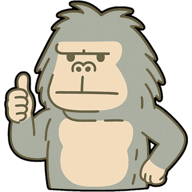

pH ねらい撃ち

pH が 1 ちがうと、[H+] は 10倍ちがう。
うすめすぎたらもう戻れない。何倍にすればよいか、考えてからカードを切れ。
- 全 8 問。液を変えて、目標の pH に合わせる。差が 0.05 以内なら命中
- 下の操作カードを押すと液が変わる(うすめる・中和する・取りかえる)。カードの枚数は問題ごとに決まっていて、うすめた液は元に戻せない
- 失敗したと思ったら「やり直す」ですぐ最初の状態へ(1回 −10点)
- 命中 100点。いちばん少ない手数(パー)で命中なら +50点。連続命中でボーナス
- 25 ℃、水のイオン積 Kw = 1.0×10−14 (mol/L)2。電離度は問題に書いてある値を使う
問題1/8
スコア0
手数/パー0/1
はじめの液
目標 pH3
pH メーター
pH--